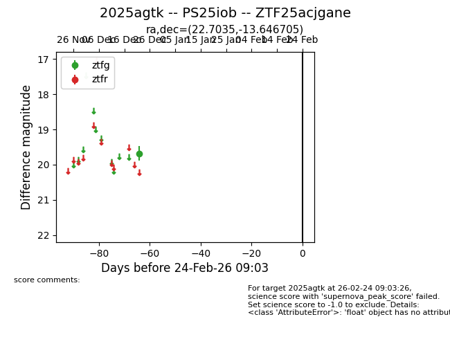
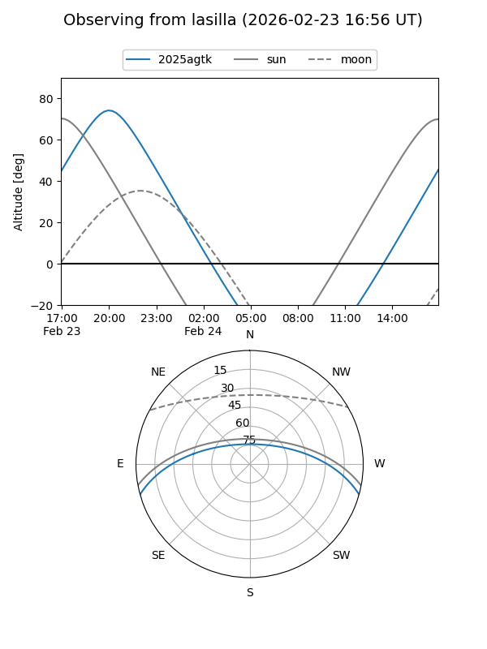
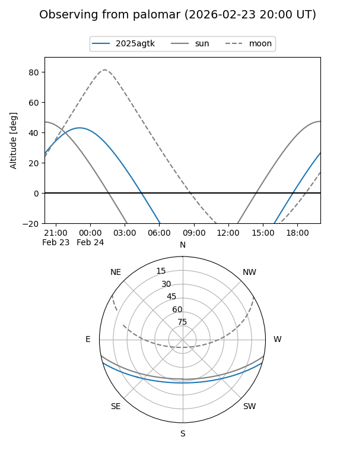

2025agtk
Target 2025agtk at 2025-12-28 19:02
Aliases and brokers:
FINK: fink-portal.org/ZTF25acjgane
Lasair: lasair-ztf.lsst.ac.uk/objects/ZTF25acjgane
ALeRCE: alerce.online/object/ZTF25acjgane
TNS: wis-tns.org/object/2025agtk
YSE: ziggy.ucolick.org/yse/transient_detail/2025agtk
alt names
ZTF25acjgane (ztf,fink_ztf)
2025agtk (tns,yse)
PS25iob (panstarrs)
Coordinates:
equatorial (ra, dec) = 22.7035,-13.64670
equatorial (HMS+DMS) = 01:30:48.84,-13:38:48.14
galactic (l, b) = (159.1793,-73.68088)
Flags:
Photometry:
last ztfg=19.68
1 ztfg detections
Lightcurve

Visibility


Additional plots